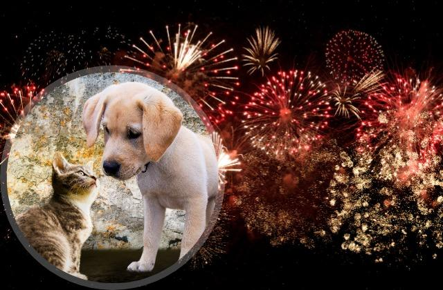

Fireworks for festive season and Precautions to take.
Updated : 12 Jan 2023 | By Rajanah Mrishana | General Knowledge

As festive season is approaching at a very rapid pace, everyone from children to our elderly family members are very eager and already in the mood for celebrations. Many of us, as our well-known end of year tradition follows, have already been buying firecrackers to make our celebrations more special. However, did you know that these fireworks have quite a few negative and harmful consequences?
First and foremost, these little bright colored objects cause massive air pollution in a very short amount of time, leaving very harmful substances in the air for several days. They also lead to many accidents whereby most of the time children or even adults can get severely injured. Not to forget about how exploding many firecrackers can lead to serious health problems like asthma and bronchitis.
Another aspect that many people forget about during this time of festivities is how their pets are going to react to the firecrackers. Many animals get very scared and disturbed during the heavy blasting a lot of lost pet cases are reported annually following the welcoming of the New year.
Hence, Eco warrior club encourages all pet owners to take care of their pets and to keep them safely inside during the festive season.
You can also take a look at the following guidelines on how to help your pet cope with fireworks.